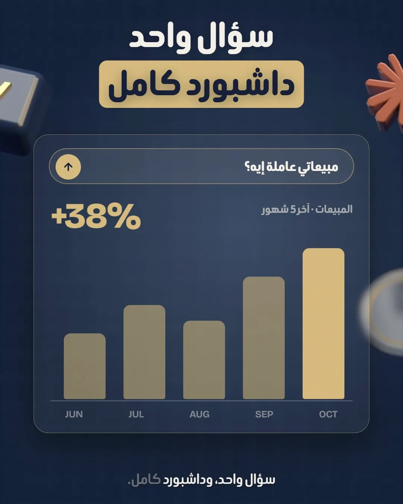
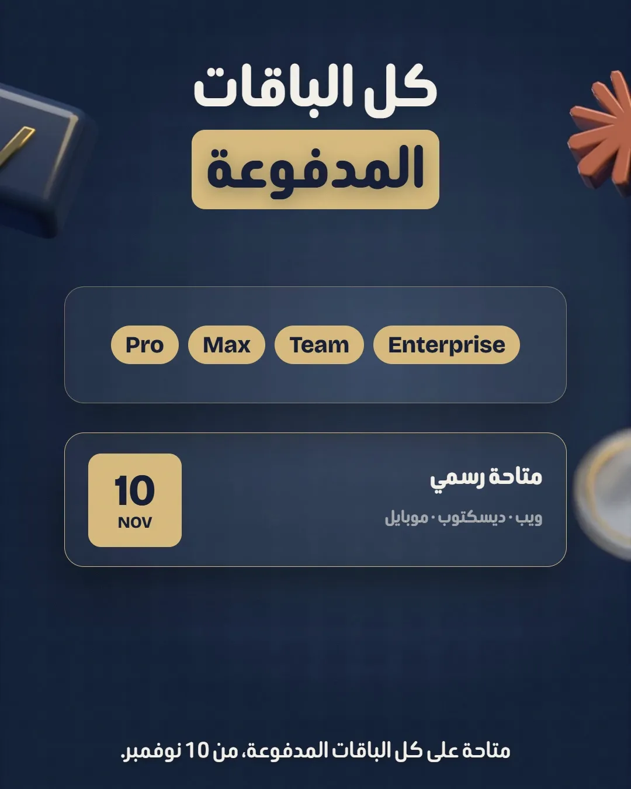
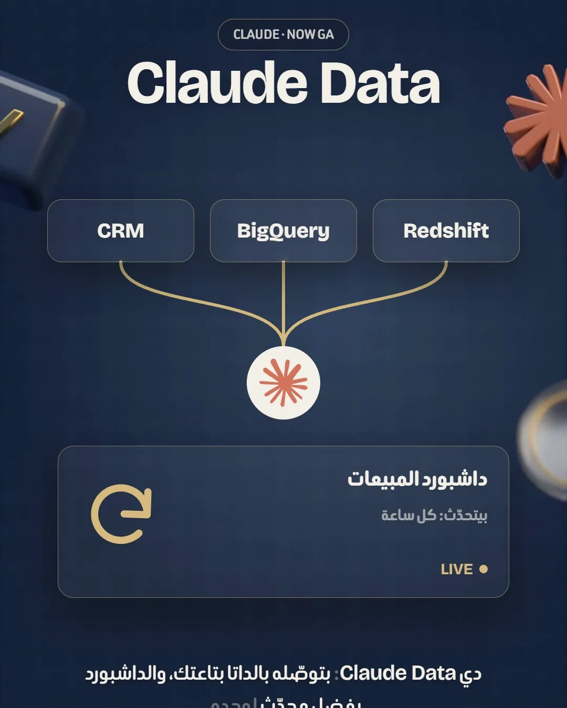
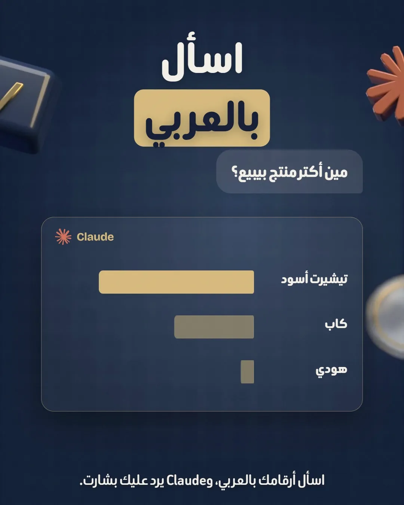
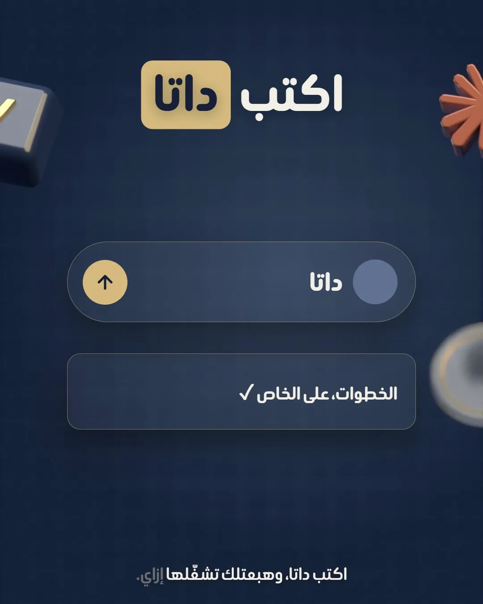

سؤال واحــدداشبورد كامـــل
Claude Data (اسمها كان Claude Dashboards) بقت متاحة رسمي من Anthropic يوم 10 نوفمبر 2026: بتوصّل Claude بمكان الأرقام بتاعتك (داتا وير هاوس أو CRM)، تسأله بكلامك العادي، ويرد عليك بشارتات وداشبورد تقدر تشاركه وتحدد كل قد إيه يتحدّث.


- 01
الميزة بالظبط
Claude Data هي اللي كان اسمها Claude Dashboards (نزلت بيتا في أكتوبر). من 10 نوفمبر 2026 بقت متاحة رسمي (Generally Available). بتسأل Claude سؤال عن أرقامك، فيكتب الكويري ويرد بشارت أو داشبورد كامل. وكمان يقدر يعمل «data story» أو فيديو مشروح من الأرقام تراجعه قبل ما تشاركه.
إعلان Anthropic الرسمي (10 نوفمبر 2026) ↗
من الريل: سؤال واحد، والشارت بيتبني لوحده - 02
اتأكد من خطتك
متاحة على كل الباقات المدفوعة (Pro و Max و Team و Enterprise)، على الويب والديسكتوب والموبايل. على Team بتبقى شغالة لوحدها. على Enterprise بتتفتح افتراضيًا يوم 20 نوفمبر 2026، وقبلها الأدمن يقدر يفتحها.

من الريل: كل الباقات المدفوعة، من 10 نوفمبر - 03
وصّل الداتا بتاعتك
Claude Data محتاجة «data connector»: يعني توصّل Claude بالمكان اللي فيه أرقامك، زي داتا وير هاوس (BigQuery أو Redshift أو ClickHouse) أو CRM. ومن الشركاء اللي ذكرتهم Anthropic: Amplitude و Mixpanel و PostHog. ضيف الـ connector بتاع مصدرك في Claude (ولو إنت في تيم، ممكن الأدمن هو اللي يضيفه).

من الريل: مصادر الداتا بتتوصل بـ Claude - 04
اسأل بالعربي
في الشات اكتب سؤالك عادي، وقوله يطلعهولك داشبورد. كل ما تحدد الفترة والرقم اللي يهمك، النتيجة بتبقى أوضح.
From my sales data: build a dashboard of the last 5 months — total sales per month, top 3 products, and the % change vs the month before. Refresh it every hour.
من الريل: «مين أكتر منتج بيبيع؟» والرد شارت - 05
شاركه وخليه يتحدّث
تقدر تحدد كل داشبورد يتحدّث كل قد إيه. ولو شاركته، زمايلك بيشوفوا آخر أرقام وقت ما يفتحوه (live sharing، ودي لسه بيتا). وفيه كمان «certified queries»: فريق الداتا يعتمد الكويريز الصح علشان الكل يشتغل على نفس الأرقام، ودي برضه بيتا.
خبر TechCrunch (10 نوفمبر 2026) ↗
من الريل: اكتب «داتا» والخطوات توصلك على الخاص
نصايح صغيرة
- من غير connector مش هتشتغل: لازم يبقى عندك مكان للداتا (warehouse أو CRM) متوصّل.
- الـ live sharing والـ certified queries لسه بيتا، فشكلها ممكن يتغيّر.
- عندك براند ومحتاج داشبورد أو موقع أو موشن؟ ابعتلي على الواتساب وأقولك السعر حسب اللي محتاجه.
عايز حد يعملهولك؟
مش فاضي تتعلم وتعمل بنفسك؟ أنا بعمل ريلز لبراندك بنفس الطريقة اللي بشرحها هنا.